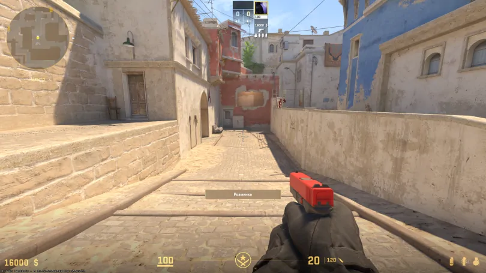

Інструкція по розкидці
Цей смок повністю закриває огляд снайперу в вікні (Window) на мапі Mirage, що дозволяє твоїй команді безпечно зайняти Мід.
- Крок 1: Станьте в куток біля сміттєвого бака на респі T-side.
- Крок 2: Прицільтеся в точку, як показано на скриншоті нижче.
- Крок 3: Киньте гранату за допомогою Jumpthrow.
Скриншот прицілу:
